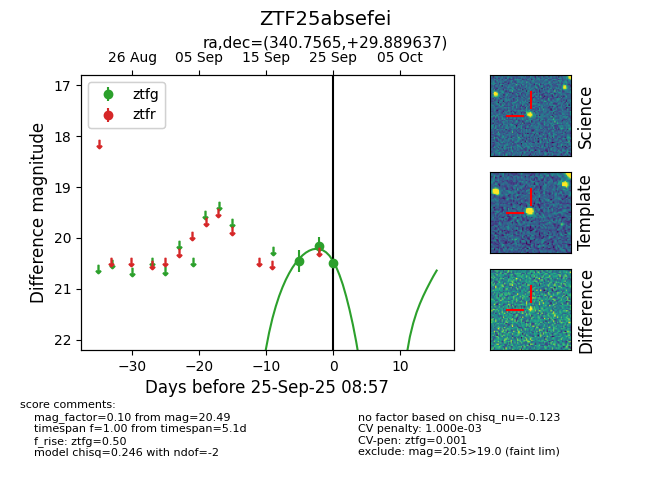
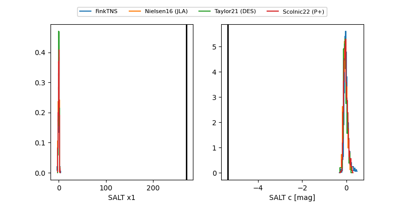

FINK: ZTF25absefei
Lasair: ZTF25absefei
ALeRCE: ZTF25absefei
ZTF25absefei (ztf,fink)
equatorial (ra, dec) = (340.7565,+29.88964)
galactic (l, b) = (92.3094,-25.23894)


last ztfg=20.49
3 ztfg detections